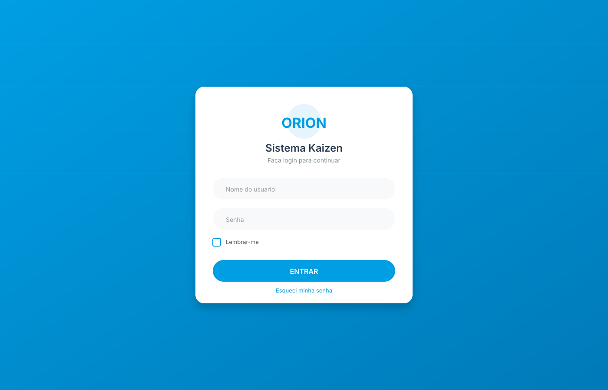
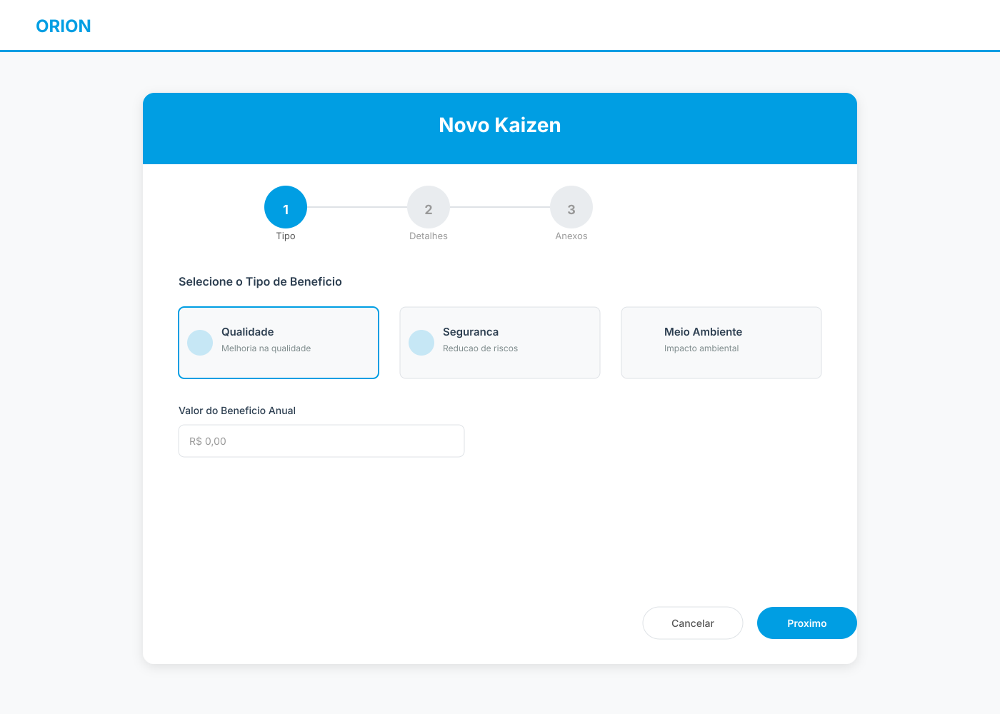
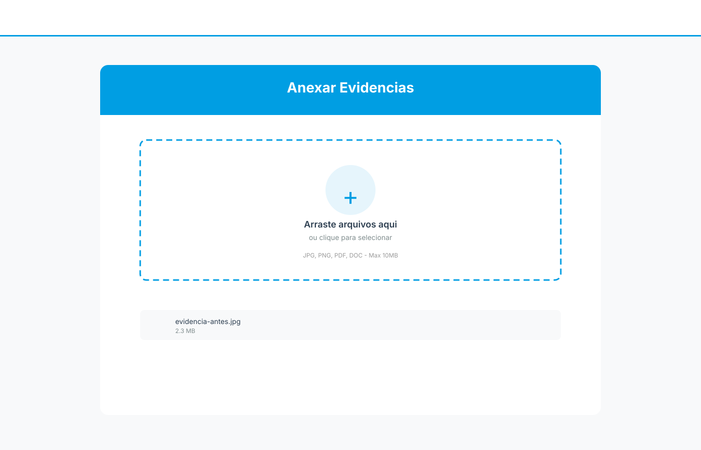
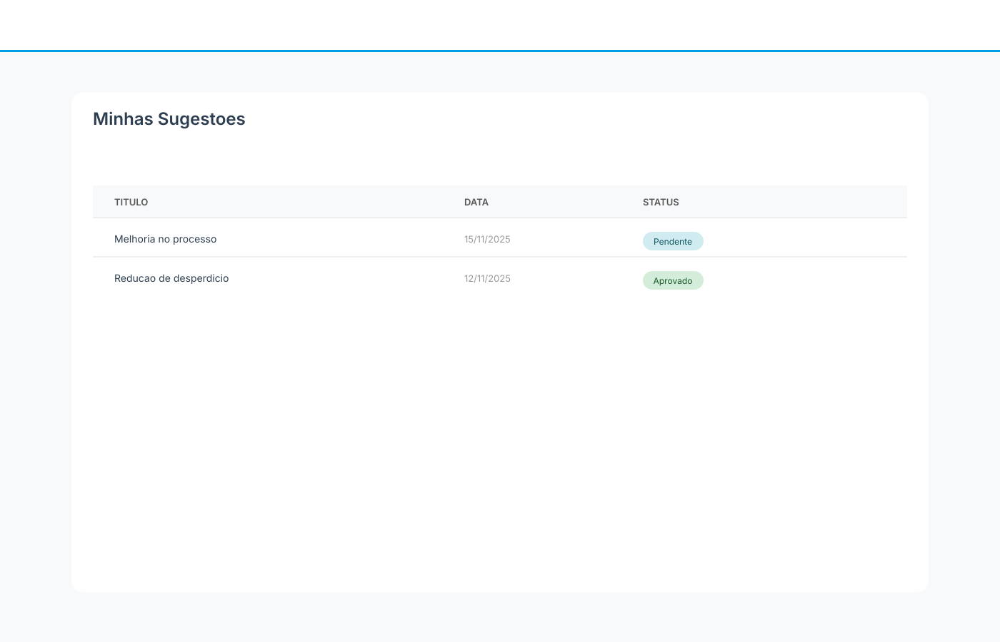
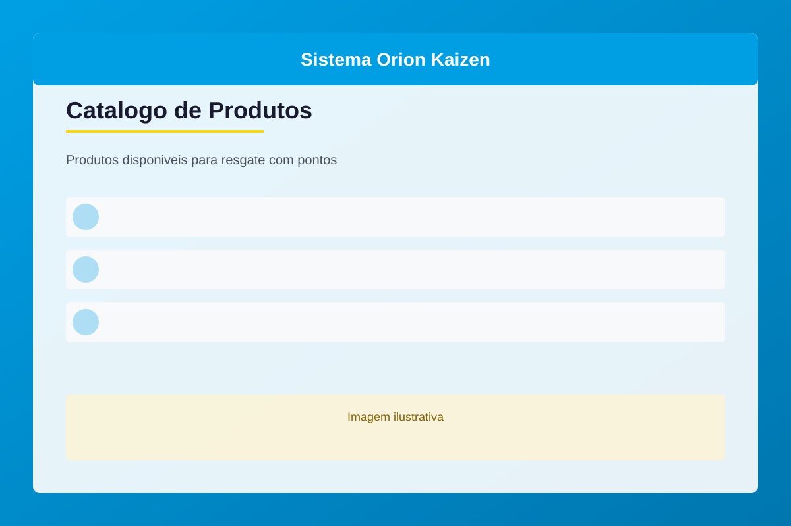

Bem-vindo ao Sistema Kaizen
O Sistema Orion Kaizen é uma plataforma de melhoria contínua onde você pode registrar suas ideias e ganhar pontos para trocar por produtos.
Como Fazer Login
1
Acesse o Sistema
Entre no endereço fornecido pela sua empresa (ex: http://sistema.empresa.com/)

2
Digite seus Dados
Usuário: Seu nome de usuário
Senha: Fornecida pelo RH ou gestor
3
Marque "Lembrar-me"
Para não precisar fazer login toda vez (opcional)
Esqueceu a senha? Clique em "Esqueci minha senha" e siga as instruções por email.
Como Criar um Kaizen
1
Clique em "Novo Kaizen"
No menu principal, selecione a opção "Novo Kaizen"

2
Escolha o Tipo de Benefício
Selecione qual tipo de melhoria sua ideia representa:
- Qualidade: Melhorias focadas na qualidade do produto
- Segurança: Melhorias que reduzem/evitam riscos e acidentes
- Meio Ambiente: Melhorias focadas a evitar o impacto ambiental
- Fluxo de trabalho: Melhoria que otimizam o tempo de trabalho
- Custos: Redução de desperdício
- Produtividade: Melhorias que geram aumento de produto produzido
3
Informe o Valor do Benefício
Dependendo do tipo escolhido, informe:
- Reais economizados: Digite o valor em R$
- Horas poupadas: Digite quantas horas por ano
- Kg de carbono: Digite a quantidade reduzida
Valores acima de R$ 15.000,00 exigirão justificativa adicional.
4
Descreva sua Ideia
Preencha os três campos de texto:
- Situação Atual: Como era antes da melhoria
- Objetivo: Onde e como aplicou a ideia
- Resultado: Quais foram os ganhos obtidos
5
Anexe Arquivos
Adicione evidências da sua melhoria:
- Fotos do antes e depois
- Planilhas de cálculo
- Documentos de suporte

Você pode arrastar e soltar os arquivos diretamente na área de upload!
6
Adicione Colaboradores (Opcional)
Se outras pessoas ajudaram, selecione até 2 colaboradores
7
Envie para Análise
Revise tudo e clique em "Enviar Kaizen"
Você receberá um email quando seu Kaizen for analisado!
Como Acompanhar seus Kaizens
1
Acesse "Minhas Sugestões"
Veja todos os Kaizens que você enviou

2
Entenda os Status
- Pendente - Aguardando análise do líder
- Aprovado - Kaizen aprovado, pontos creditados!
- Rejeitado - Não aprovado, veja o motivo
- Devolvido - Precisa de ajustes, edite e reenvie
3
Editar Kaizen Devolvido
Se seu Kaizen foi devolvido:
- Clique em "Editar"
- Leia o comentário do líder
- Faça as correções necessárias
- Salve para nova análise
Sistema de Pontos
1
Como Ganhar Pontos
Você ganha pontos quando seu Kaizen é aprovado.
2
Ver Saldo
Seu saldo de pontos aparece sempre no topo da tela:
Saldo: 250 pontos
3
Extrato de Pontos
Para ver todo histórico:
- Clique em "Extrato de Pontos"
- Veja todas movimentações (ganhos e resgates)
- Confira data e descrição de cada transação
Catálogo de Produtos
1
Acessar o Catálogo
Clique em "Trocar Pontos" no menu principal

2
Escolher Produto
Navegue pelas categorias e veja:
- Foto do produto
- Descrição
- Quantidade de pontos necessária
3
Resgatar
Se você tem pontos suficientes:
- Clique em "Resgatar"
- Confirme a troca
Após confirmar o resgate, os pontos são debitados imediatamente e a ação não pode ser desfeita.
4
Acompanhar Resgates
Veja seu histórico em "Minhas Trocas"
Precisa de Ajuda?
Entre em contato
Para dúvidas ou problemas técnicos, entre em contato com seu gestor direto.